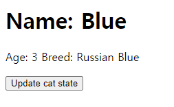

Case10: React State Update & Immutability
케이스 주제
React의 Props와 State는 모두 불변성(immutability)을 유지하는 것이 필요합니다.
불변성을 유지하면서 상태를 다루게 되면 이 상태를 다루는 함수 내부에서 side effect가 발생할 염려가 줄어듭니다.
함수 내부에서 이 상태를 직접 변경할 수 없어서 추적이 용이해지기 때문입니다.
이러한 불변성을 유지함으로써 얻는 이점들 외에도 컴포넌트가 불필요하게 자주 리렌더링 되는 것을 막는 역할을
하는데,
이전 상태와 다음 상태를 비교할때 객체의 레퍼런스만 비교하는(shallow compare) 값싼 연산으로 리렌더링 여부를
결정하는데 큰 도움이 됩니다.
상태를 immutable하게 관리하는 것에 대해 알아보기 위해서 간단하게 아래와 같은 형태로 Component 클래스를
작성해봅니다.
class Component {
setState(newState) {}
render() {}
}
문제
Q. State를 immutable하게 관리하는 React Class Component를 단순한 방식으로 모방해서 만들어보세요.
요구 및 참고사항
- setState와 render 메서드를 갖는 Component 클래스를 만듭니다.
-
setState 메서드는 아래와 같이 작동해야 합니다.
-
newState 파라미터에 대한 유효성 검사를 합니다.
- newState는 객체 또는 함수 타입을 받습니다. 그 외의 타입이 오면 에러를 내도록 합니다.
- newState가 객체일 경우에는 this.nextState에 newState를 대입합니다.
-
newState가 함수일 경우에는 newState 함수에 현재 state와 props를 전달해 실행하고 반환된 새 state를
this.nextState에 대입합니다.
-
case4 React State 편에서처럼 state를 병합하지 않는 것은 this.state를 immutable 하게 관리할때와 그렇지
않을때의 컴포넌트 렌더링 작동에 차이를 두기 위함입니다.
-
마지막으로 this.shouldComponentUpdate(this.nextState) 함수를 실행해 true를 반환했을때만 컴포넌트를 리렌더링
하도록 합니다.
-
이렇게 만든 Component를 import 해서 상속받아 활용하는 코드를 만듭니다.
- 이 상속해서 만든 컴포넌트에서 setState를 호출해서 리렌더링이 되도록 합니다.
-
이 상속해서 만든 컴포넌트의 render 함수를 단순하게 외부에서 호출하는 것으로 body tag 하위에 렌더링이 되도록
합니다.
- 이 컴포넌트에서 shouldComponentUpdate(nextState) {} 메서드를 구현합니다.
-
만약 this.state를 immutable 하게 관리를 하지 않았다면 state를 다른 값으로 업데이트 하더라도 리렌더링이 되지
않도록 합니다.
기능 작동 이미지
버튼클릭 전

버튼클릭 후

주요 학습 키워드
-
JavaScript
- Function Parameter Validation
참고 문서
작성해주셔야 하는 question 파일 경로
./question/index.js
./question/React.js
실행 방법
경로
./question
index.html 파일을 브라우저로 열거나 로컬 웹 서버로 실행하기
$ npx serve -l 3000